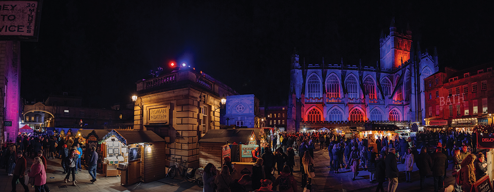
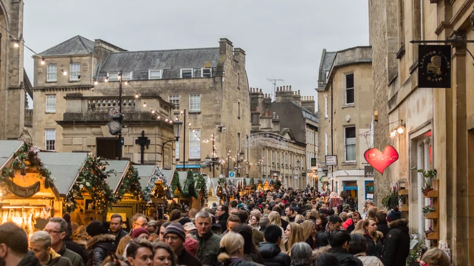

England: Bath

Bath is a UNESCO World Heritage site, and its historic buildings make a charming setting for holiday celebrations. The Christmas market has more than 250 stalls, and most of the goods on sale are handmade. A short walk from the market is Royal Victoria Park, where guests can enjoy Bath on Ice, a winter attraction that includes a 3,200-square-foot ice skating rink, as well as a glow-in-the-dark mini-golf course. The No. 1 Royal Crescent museum, which gets festooned with period decor for the season, hosts lectures and presentations about the history of the city's Christmas celebrations.
Discover the Magic of Bath Christmas Market
From Thursday 28th November to Sunday 15th December 2024, the picturesque streets of Bath are transformed into a magical, festive experience. Meander through the streets of Bath adorned with over 170 twinkling chalets and discover some of the best independent businesses that the South West and beyond has to offer. With stylish homeware, handmade jewellery, personalised presents and more, bathe in the sights and smells of Christmas whilst ticking everything off your shopping list.

Festive Food
It wouldn't be Christmas without a festive treat. At Bath Christmas Market, pick up your favourite winter warmers to enjoy as you explore everything the market has to offer. Grab your Christmas market favourites or a comforting hot drink to keep you toasty whilst you wander around the Market.
Charitable Spirit
Bath Christmas Market is proud to support local charities. Make sure you pay a visit to their stalls and do what you can to show your support. We care about the local community and work hard to support as many groups as possible, from schools and colleges to choirs and dance troupes.
A Sustainable Market
Sustainability is at the heart of Bath Christmas Market. Each year we strive to be more environmentally responsible and make a positive impact on the city. This ensures that we are a leader in Event Sustainability for the Bath and North East Somerset region. As of 2024, we only use one generator on site, which uses HVO to lower our carbon emissions, bringing us closer to our goal of being carbon-neutral. We also use reusable or biodegradable alternatives to plastic (where possible) to minimise single-use plastic on site.